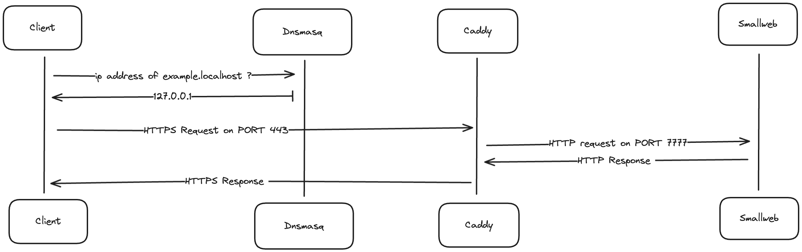

This page will guide you through the process of setting up your local environment for smallweb on MacOS.
This setup is useful for developing and testing smallweb apps locally, without having to deploy them to the internet.
If you want to expose your apps to the internet instead, you can follow the Cloudflare Tunnel setup guide.
Architecture
The following diagram illustrates the architecture of the local setup:

The components needed are:
- a dns server to map
*.localhostdomains to127.0.0.1ip address (dnsmasq) - a reverse proxy to automatically generate https certificates for each domain, and redirect traffic to the smallweb evaluation server (caddy)
- a service to map each domain to the corresponding folder in ~/smallweb, and spawn a deno subprocess for each request (smallweb)
MacOS setup
In the future, we might provide a script to automate this process, but for now, it's a manual process.
Install Brew
# install homebrew (if not already installed)
/bin/bash -c "$(curl -fsSL https://raw.githubusercontent.com/Homebrew/install/HEAD/install.sh)"
Install Deno
brew install deno
Setup Smallweb
brew install pomdtr/tap/smallweb
smallweb service install
Setup Caddy
Caddy’s configuration path depends on whether you're using an Intel-based Mac or an Apple Silicon (M1/M2) Mac.
- For Apple Silicon (M1/M2) Macs:
The default installation path is
/opt/homebrew/etc/Caddyfile. - For Intel-based Macs:
The default installation path is
/usr/local/etc/Caddyfile.
Apple Silicon (M1/M2):
brew install caddy
# Write caddy configuration
cat <<EOF > /opt/homebrew/etc/Caddyfile
localhost, *.localhost, *.*.localhost {
tls internal {
on_demand
}
reverse_proxy localhost:7777
}
EOF
Intel-based:
brew install caddy
# Write caddy configuration
cat <<EOF > /usr/local/etc/Caddyfile
localhost, *.localhost, *.*.localhost {
tls internal {
on_demand
}
reverse_proxy localhost:7777
}
EOF
Run Caddy:
# Run caddy in the background
brew services start caddy
# Add caddy https certificates to your keychain
caddy trust
Setup dnsmasq
The configuration path for dnsmasq also depends on your Mac's architecture.
Apple Silicon (M1/M2):
brew install dnsmasq
# Write dnsmasq configuration
echo "address=/.localhost/127.0.0.1" >> /opt/homebrew/etc/dnsmasq.conf
Intel-based:
brew install dnsmasq
# Write dnsmasq configuration
echo "address=/.localhost/127.0.0.1" >> /usr/local/etc/dnsmasq.conf
Run dnsmasq:
# Run dnsmasq in the background
sudo brew services start dnsmasq
# Indicates to the system to use dnsmasq for .localhost domains
sudo mkdir -p /etc/resolver
cat <<EOF | sudo tee -a /etc/resolver/localhost
nameserver 127.0.0.1
EOF
Testing the setup
First, let's create a dummy smallweb website:
mkdir -p ~/smallweb/example
cat <<EOF > ~/smallweb/example/main.ts
export default {
fetch() {
return new Response("Smallweb is running", {
headers: {
"Content-Type": "text/plain",
},
});
}
}
EOF
If everything went well, you should be able to access https://example.localhost in your browser, and see the message Smallweb is running.
Ubuntu / Debian setup
Install Deno
curl -fsSL https://deno.land/install.sh | sh
# add ~/.deno/bin to PATH
echo "export PATH=\$PATH:\$HOME/.deno/bin" >> ~/.bashrc
Setup Smallweb
curl -fsSL https://install.smallweb.run | sh
# add ~/.local/bin to PATH
echo "export PATH=\$PATH:\$HOME/.local/bin" >> ~/.bashrc
smallweb service install
Setup Caddy
sudo apt install -y caddy
# Write caddy configuration
cat <<EOF > /etc/caddy/Caddyfile
*.localhost {
tls internal {
on_demand
}
reverse_proxy localhost:7777
}
EOF
sudo systemctl restart caddy
caddy trust
There is no need to setup dnsmasq on Ubuntu, as it seems to be already configured to resolve .localhost domains to 127.0.0.1.
Testing the setup
First, let's create a dummy smallweb website:
mkdir -p ~/smallweb/example
CAT <<EOF > ~/smallweb/example/main.ts
export default {
fetch() {
return new Response("Smallweb is running", {
headers: {
"Content-Type": "text/plain",
},
});
}
}
EOF
If everything went well, you should be able to access https://example.localhost in your browser, and see the message Smallweb is running.